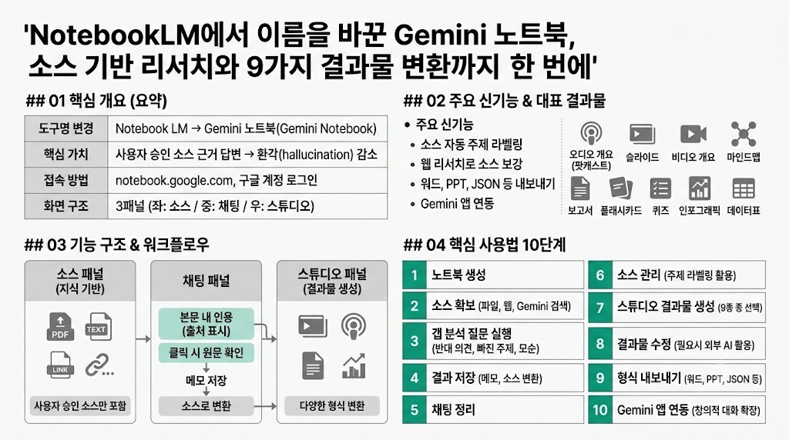

FuturepediaMORNING DIGEST · 2026-08-09 · Futurepedia🎬 영상
NotebookLM에서 이름을 바꾼 Gemini 노트북, 소스 기반 리서치와 9가지 결과물 변환까지 한 번에

01핵심 개요 (표)
항목
내용
도구명 변경
Notebook LM → Gemini 노트북(Gemini Notebook)으로 명칭 변경
핵심 가치
사용자가 승인한 소스에만 근거해 답변 → 환각(hallucination) 감소
접속 방법
notebook.google.com에 기존 구글 계정으로 로그인
화면 구조
좌: 소스(지식 기반) / 중: 채팅 / 우: 스튜디오(결과물 생성) 3패널
주요 신기능
소스 자동 주제 라벨링, 웹 리서치로 소스 보강, 워드·마크다운·PPT·JSON·PNG 내보내기, Gemini 앱과 연동
대표 결과물
오디오 개요(팟캐스트), 슬라이드, 비디오 개요, 마인드맵, 보고서, 플래시카드, 퀴즈, 인포그래픽, 데이터표
02핵심 기능 구조
좌측 소스 패널(지식 기반): 사용자가 직접 업로드했거나 Gemini가 찾아 사용자가 승인한 자료만 포함. 모든 답변이 이 소스에 근거하므로 환각이 줄어듦.
중앙 채팅 패널: 일반적인 채팅 인터페이스와 유사하지만, 답변 전체에 본문 내 인용(출처 표시)이 붙고 클릭 시 소스 패널에서 해당 원문 맥락을 바로 확인 가능.
우측 스튜디오 패널: 소스와 대화 내용을 인포그래픽·팟캐스트·짧은 영상·슬라이드·보고서 등 다양한 결과물 형식으로 변환하는 공간.
소스 추가 방식 4가지
- PDF, 텍스트, 이미지, 오디오, 비디오 등 파일 직접 업로드 - 웹사이트·유튜브 링크 붙여넣기(여러 개는 스페이스바로 연속 추가) - Gemini에게 키워드로 웹 검색을 시켜 후보 소스 목록을 받고, 신뢰도 확인 후 선택적으로 채택(불필요한 매체는 선택 해제 가능) - 구글 드라이브의 문서·스프레드시트·슬라이드 연결 시 원본 수정이 자동 반영되는 "살아있는 문서"로 작동
소스 자동 라벨링: 주제별로 소스를 탭 형태로 자동 분류. 하나의 소스를 여러 탭에 동시 표시하거나 탭 순서를 재배열 가능. 특정 주제 탭만 선택/해제해 답변 범위를 좁힐 수 있음.
채팅 세부 기능
- 프롬프트 입력창 하단에 현재 답변에 사용 중인 소스 개수 표시 - 기본은 전체 소스를 참조하지만, 수동으로 특정 소스만 선택해 답변 범위를 제한 가능 - 답변 내 인용문에 마우스를 올리면 출처가 뜨고 클릭하면 원문 맥락으로 이동 - "메모로 저장" 후 "소스로 변환"하면 그 답변 자체가 새로운 소스가 되어 이후 답변의 근거로 재사용됨 - 채팅 기록 삭제는 되돌릴 수 없으므로, 삭제 전 중요한 답변은 반드시 메모 저장 필요
03기술적·배경 맥락
Notebook LM이라는 이름 자체가 Gemini 노트북으로 바뀌었고, 그 외에도 기능이 대폭 강화됨.
핵심 원리는 사용자가 승인한 출처에서만 정보를 가져와 답변을 구성하는 방식으로, 근거 없는 생성(환각)을 억제.
신규 기능으로 프롬프트에 따라 시스템이 "기존 소스에만 의존하지 않고 스스로 생각해 새 소스를 찾아볼지" 판단하는 유연성이 추가됨. 단, 일반 질문으로 돌아가면 다시 기존 출처 인용 위주 답변으로 복귀.
인포그래픽 등 이미지 기반 결과물은 아직 세부 텍스트·수치에 오류가 발생할 수 있어(예: 문장이 어색하거나 숫자가 겹침), 별도 AI 도구(예: ChatGPT)로 재검수·수정하는 보완 워크플로우가 필요.
영상 후반부는 Gemini 노트북과 무관하게 트랜스포머의 셀프 어텐션·위치 인코딩·토큰화 개념을 설명하는 데모 콘텐츠(영상 개요 예시)가 포함되어 있어, 실제 제품 데모용 예시 자료로 사용됨.
04전략적 의미
리서치 정확성(소스 근거 답변)과 생성형 AI 특유의 창의성은 상충되는 경우가 많은데, Gemini 노트북은 정확성에, Gemini 앱은 창의성에 특화되도록 역할을 분리.
모든 노트북이 Gemini 앱에도 동기화되어 나타나므로, 노트북에서 구축한 지식 기반을 Gemini 앱 채팅으로 가져가 더 자유로운 창의적 대화를 이어갈 수 있음. Gemini에서 나눈 대화는 다시 노트북의 소스 항목에 자동으로 기록됨.
Notebook LM 시절에는 하나의 노트에 긴 채팅 하나만 유지되는 한계가 있었으나, Gemini 앱 연동으로 사실상 한 노트북을 중심으로 여러 개의 병렬 채팅방을 운영하는 효과를 얻을 수 있게 됨.
워드·마크다운·PPT·JSON·PNG 등 표준 오피스/개발 포맷으로 내보내기가 가능해지면서, 리서치 결과를 업무 산출물(보고서, 발표자료)로 바로 연결하는 활용도가 높아짐.
05핵심 사용법/워크플로우 (단계 표)
단계
내용
1. 노트북 생성
notebook.google.com 접속 → 새 노트북 생성 → 제목을 자동 생성 값 대신 직관적인 이름으로 직접 수정
2. 소스 확보
파일 업로드 + 웹/유튜브 링크 붙여넣기 + Gemini 웹 검색으로 후보 소스 확보 후 신뢰도 검토·선택
3. 갭 분석 질문 3종 실행
①반대 의견·소수 관점 찾기 ②빠진 하위 주제·질문 나열 ③소스 간 모순·의견 불일치 정리
4. 결과 저장
유용한 답변은 "메모로 저장" → "소스로 변환"해 이후 답변의 근거로 재사용
5. 채팅 정리
필요 없어진 채팅 기록은 점 세 개 메뉴 → "채팅 기록 삭제"로 정리(삭제 전 중요 답변 저장 필수)
6. 소스 관리
자동 주제 라벨링 탭을 활용해 특정 주제 소스만 선택/해제하며 답변 범위를 좁힘
7. 스튜디오 결과물 생성
오디오 개요·슬라이드·비디오 개요·마인드맵·보고서·플래시카드·퀴즈·인포그래픽·데이터표 중 필요한 형식 선택 후 생성
8. 결과물 수정
슬라이드·인포그래픽 등에서 오류 발견 시 "수정" 버튼으로 요청하거나, 필요 시 외부 AI 도구로 재검수
9. 형식 내보내기
채팅창에 원하는 파일 형식(워드/마크다운/PPT/JSON/PNG)을 요청하면 스튜디오 패널에 생성됨 → 다운로드
10. Gemini 앱 연동
Gemini 앱에서 해당 노트북 파일을 열어 지식 기반 기반의 창의적 대화로 확장
06활용 시나리오 (3개 이상)
복잡한 사회적 이슈 리서치: AI가 환경에 미치는 영향처럼 다양한 관점이 얽힌 주제를 다룰 때, 소스 업로드 후 갭 분석 질문 3종(반대 관점 찾기, 빠진 하위 주제 찾기, 모순 정리)을 실행해 균형 잡힌 자료 기반을 구축.
학습·시험 대비: 소스를 기반으로 플래시카드와 퀴즈를 생성해 개념 암기와 이해도 점검에 활용. 오디오 개요(팟캐스트)를 운전·설거지 등 이동 중 복습용으로 청취.
발표자료·보고서 제작: 슬라이드 자료(발표자용/상세 프레젠테이션용 구분)나 보고서(개념 입문 강좌 등 소스 맞춤 프리셋 제공)를 생성하고, 수정 버튼으로 여러 슬라이드를 한 번에 수정 요청.
소셜 콘텐츠·시각 자료 제작: 인포그래픽 기능으로 방향·시각 스타일·상세 수준을 선택해 소셜미디어용 시각 콘텐츠를 제작(단, 세부 오류는 별도 AI 도구로 재검수 권장).
데이터 정리: 소스에 표로 정리하면 유용한 정보(예: LLM 핵심 개념 목록)가 있을 때 데이터표 기능으로 스프레드시트 형태로 바로 내보내기.
07현황 및 전망
Notebook LM에서 Gemini 노트북으로의 리브랜딩과 함께, 소스 자동 라벨링·웹 리서치 보강·다양한 파일 내보내기 등 실사용성을 높이는 업데이트가 다수 반영됨.
오디오 개요·인포그래픽·비디오 개요 등 일부 생성형 결과물은 아직 품질 편차가 있어(특히 상세 모드 인포그래픽의 오류, 비디오 개요의 낮은 활용도), 사용자가 결과물을 검수하거나 보조 도구로 후처리하는 과정이 여전히 필요.
Gemini 앱과의 연동이 강화되면서, "정확성 중심의 노트북"과 "창의성 중심의 챗봇"이라는 두 축을 하나의 지식 기반으로 넘나드는 방향으로 제품이 진화하고 있음.
08용어 사전
용어
한줄 설명
비유/예시
Gemini 노트북
구글의 소스 기반 리서치 AI 도구(구 Notebook LM), 사용자가 승인한 자료에만 근거해 답변